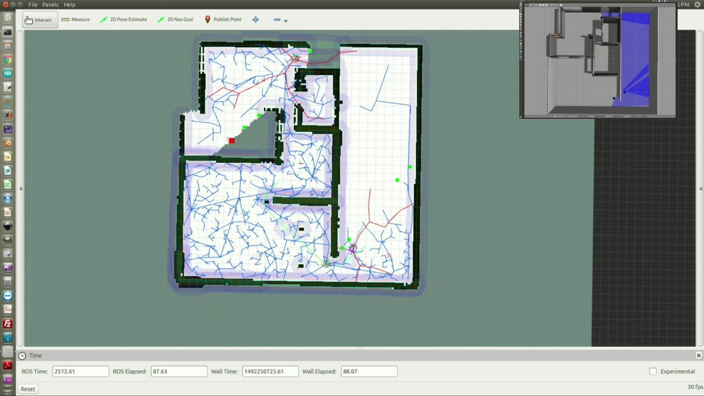

Energy management and monitoring equipment for smart grids using SST
 The major objective of this work is to develop a compact energy routing device used for residential applications. Designing and development of solid state transformer with
suitable topology that can integrate the interface for PV installations, battery storage and vehicle to grid system, this is done by re-purposing SST within current EV charging topology.
The Solid State Transformer (SST) is a new concept that has been on trial in this avenue in the last decade.
...
The major objective of this work is to develop a compact energy routing device used for residential applications. Designing and development of solid state transformer with
suitable topology that can integrate the interface for PV installations, battery storage and vehicle to grid system, this is done by re-purposing SST within current EV charging topology.
The Solid State Transformer (SST) is a new concept that has been on trial in this avenue in the last decade.
...
Control and navigation of simple robotic system
 As an intern at UST Global pvt Ltd developed and simulated an automatic navigation and mapping system for indoor robotic navigation. The main idea of project is to find suitable path finding algorithm for the bot. This is implemented in the ROS (Robotic operating system) platform in the Gazibo simulator using inbuilt turtlebot. ...
Simulation of intelligent traffic system for self-driving vehicles
This is a study based on the simulation in SUMo (Simulation of Urban MObility), which is an open source traffic simulation package. The proposed system is suitable for semi and fully autonomous vehicles and make use of vehicle to vehicle as well as vehicle to traffic controller communications. ...
Simple greeting robotic system
This is developed as a hobby project. Using a camera feed and by the help of opencv implemented a simple gusture recognisation. A basic robotic platform with 3 degree of freedom and controlled using an arduino is developed. Some speech recognisation using AIML is also used.
Automatic two dimensional drawing bot
This is also developed as a hobby project. This is basically a two axis plotter implemented by stepper motors. An image is converted to Gcode using a software tool and then it is then translated into coordinates and given to stepper motor through an arduino microcontroller.